UDN
Search public documentation:
DevelopmentKitGemsCreatingDistortedReflection
日本語訳
中国翻译
한국어
Interested in the Unreal Engine?
Visit the Unreal Technology site.
Looking for jobs and company info?
Check out the Epic games site.
Questions about support via UDN?
Contact the UDN Staff
中国翻译
한국어
Interested in the Unreal Engine?
Visit the Unreal Technology site.
Looking for jobs and company info?
Check out the Epic games site.
Questions about support via UDN?
Contact the UDN Staff
UE3 Home > Unreal Development Kit Gems > Creating distorted reflection
UE3 Home > Materials & Textures > Creating distorted reflection
UE3 Home > Materials & Textures > Creating distorted reflection
Creating distorted reflection
Last tested against UDK Apr, 2011
PC compatible
Overview
To give more realism to your materials, sometimes a strong or subtle reflection is required. For performance reasons, a static cube map can be created off line and used in real time to pull off the effect. Due to Moore's Law, there's simply a whole lot more power that can now be used to generate real time reflections to then be used in materials. Real world reflective materials such as mirrors, marble or metal can now be created easily.
Render targets
Render targets are viewports that are rendered off screen. That is to say, they represent a view of the world but they aren't displayed on the screen. They can be used in materials, and that is where they become very useful; as you then able to modify the render target anyway you want within the Material Editor.
Creating a render target
Creating a render target is as simple as right clicking in the context browser. Then select "New TextureRenderTarget2D". 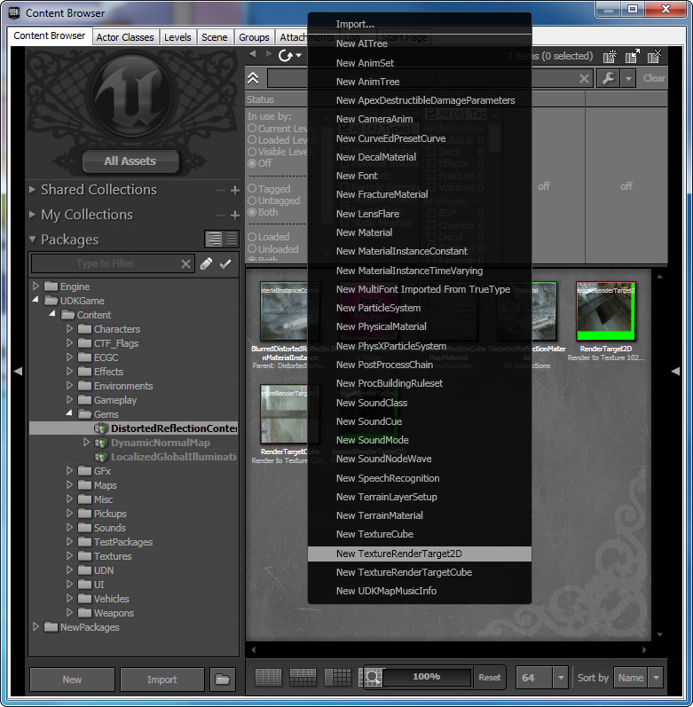 Entering a package name, an optional group and a name. In this example, I've decided to store the Render Target in the map rather than a separate package. Since render targets are usually only used in a specific map it can be useful to do this. However, this is of course up to you. There are parameters you can tweak to adjust the render target 2D. 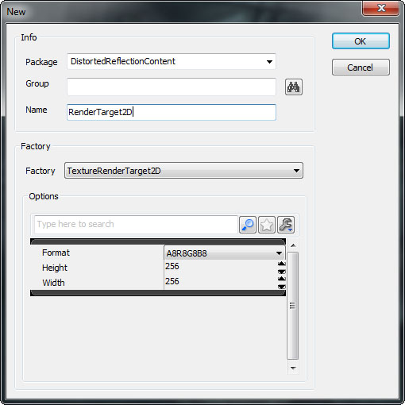- Format - Format of the RenderTarget2D
- A8R8G8B8 - 8 Bits RGBA, values can only exist between 0 and 255
- G8 - 8 Bit Grayscale, values can only exist between 0 and 255
- FloatRGB - Float RGB, values can be any floating point number
- Height - Height of the RenderTarget2D. Smaller is better for performance.
- Width - Width of the RenderTarget2D. Smaller is better for performance.
- Address X - This parameter adjusts what pixels are returned if you sample outside 0.f to 1.f.
- Address Y - This parameter adjusts what pixels are returned if you sample outside 0.f to 1.f.
- Force Linear Gamma - Set true if you wish to use linear gamma space (a form of gamma correction) for this render target.
- Needs Two Copies - Set false if you are using render targets within the scene itself. This helps to save memory, otherwise if the render target is an offscreen buffer which is used for other purposes, you may need to keep two copies.
- Render Once - Set true if the render target only needs to be rendered once. This can be useful for scene captures that do not change at all.
- Target Gamma - Allows you to adjust the gamma of the render target texture.
- Force PVRTC4 - Not used for render targets as they are not supported on the iOS.
Related Topics
Creating the scene capture reflection
Go to the Actor Classes tab within the Content Browser and find the Scene Capture Reflect Actor. 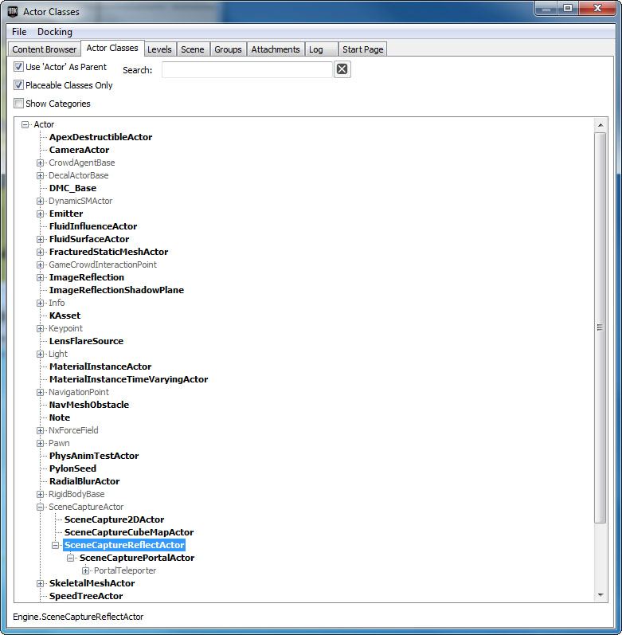 Right click where you want to put the Scene Capture Reflect Actor. Put it at the location of where you want the reflection to originate from. 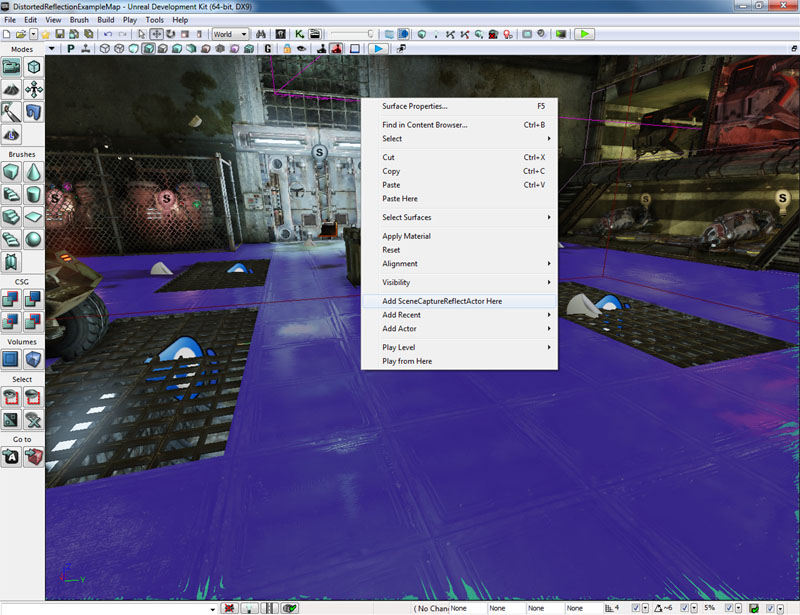
Setting the scene capture reflection properties
SceneCaptureReflectActor is simply a container for a SceneCaptureReflectComponent. 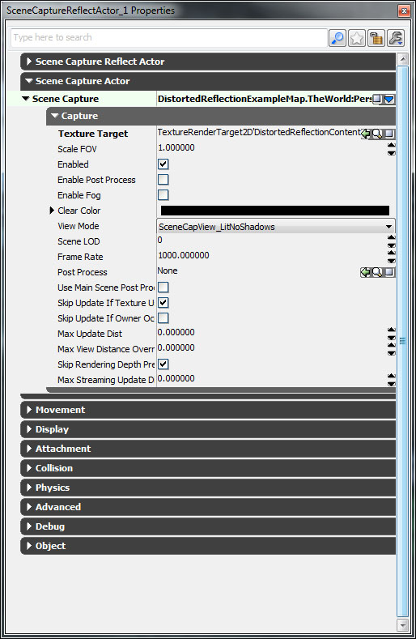- Texture Target - RenderTarget2D to render the scene capture to.
- Scale FOV - Scales the FOV.
- Enabled - Is the scene capture enabled?
- Enable Post Process - Is post process enabled for this scene capture?
- Enable Fog - Is fog enabled for this scene capture?
- Clear Color - The color to clear the RenderTarget2D before rendering the scene capture.
- View Mode SceneCapView_LitNoShadows - Renders the scene in lit mode, but skipping shadows. SceneCapView_Lit - Renders the scene in lit mode. SceneCapView_Unlit - Renders the scene in unlit mode. SceneCapView_Wire - Renders the scene in wireframe mode.
- Scene LOD - Allows you to adjust the scene's LOD level to use when capturing the scene.
- Frame Rate - Frame rate to update this scene capture.
- Post Process - Post process chain to use for this scene capture.
- Use Main Scene Post Process Settings - Uses the scenes post processing settings so that the scene capture is more or less the same.
- Skip Update If Texture Users Occluded - Skip updating this scene capture if none of the materials, actors are currently in view.
- Skip Update If Owner Occluded - Skip updating this scene capture if the owner of the component is not currently in view.
- Max Update Dist - Skip updating this scene capture if the camera is further than this value.
- Max View Distance Override - Use this to cull distant objects from the reflection.
- Skip Rendering Depth Prepass - Skip the depth prepass when rendering the scene capture. If the scene capture is small, it's more expensive to skip the depth prepass (CPU cost vs GPU cost).
- Max Streaming Update Dist - Skip streaming texture updates for the scene capture if the owner is further than this many units away from the viewer.
Creating a mirror
The material is quite straight forward. The only things that needs to be set properly is the Lightmass Switches. When Lightmass is performed, it doesn't make sense to use the render target since this is dependent on the camera view. Thus, without the Lightmass Switches, the incorrect diffuse color is used (usually a bright green). To correct for this, you refer light mass to a constant so that it can reflect light more appropriately.
Mirror material layout
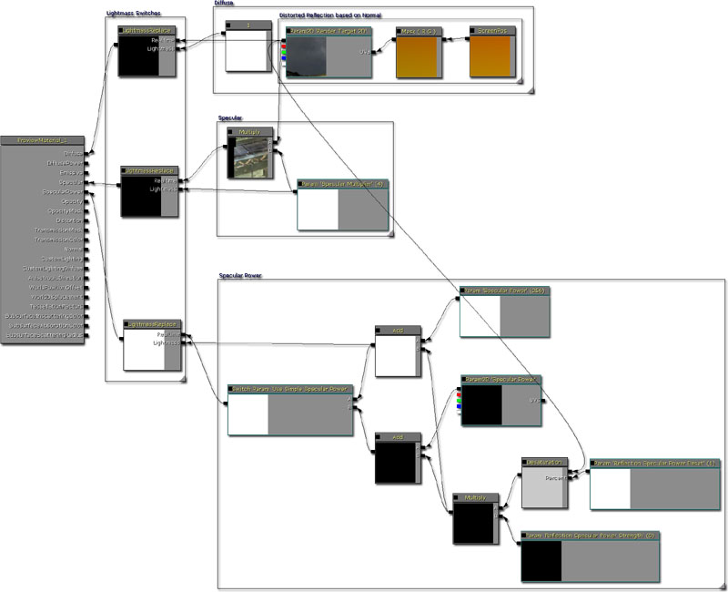 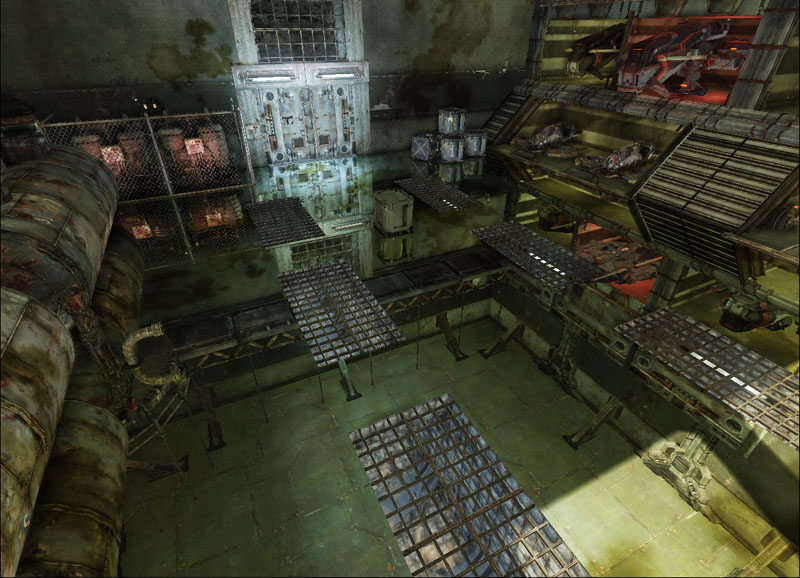Creating marble
To create the marble material, one method is to linearly interpolate between a diffuse texture and the reflection.
Marble material layout
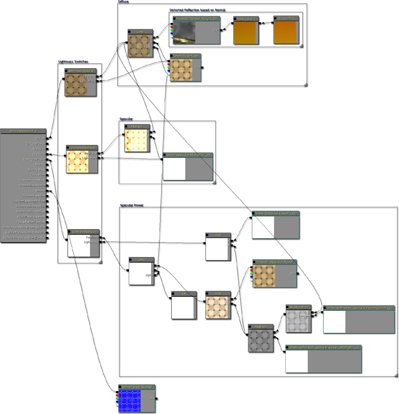 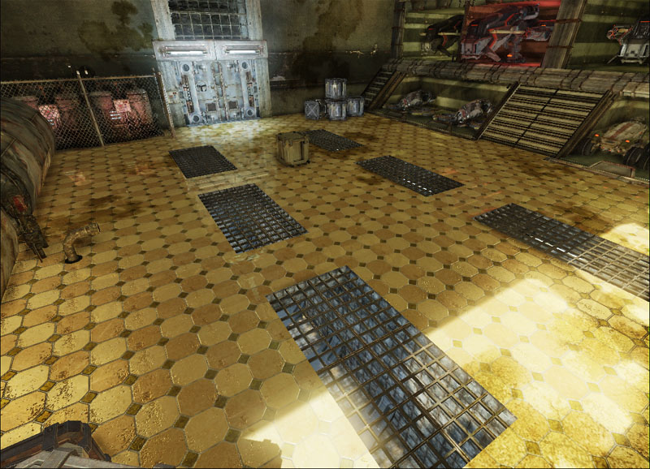Creating distorted metal
To distort the reflection, you can use the normal maps to offset the UV coordinates.
Distorted metal material layout
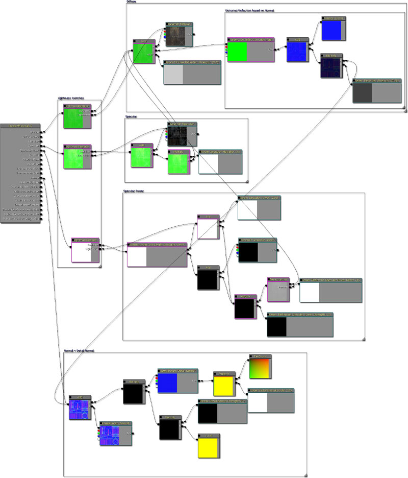 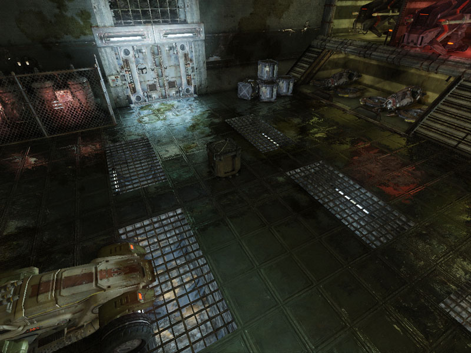Why are there bright green areas in my reflections?
Sometimes when Unreal Engine 3 renders the reflection into the render targets, it doesn't use the entire render target texture space available. Since the clear color is bright green often, if the distortion texture look up is outside the rendered bounds then it will use the bright green pixels. This shows up in the distorted reflections unfortunately. There are two methods to deal with this issue. 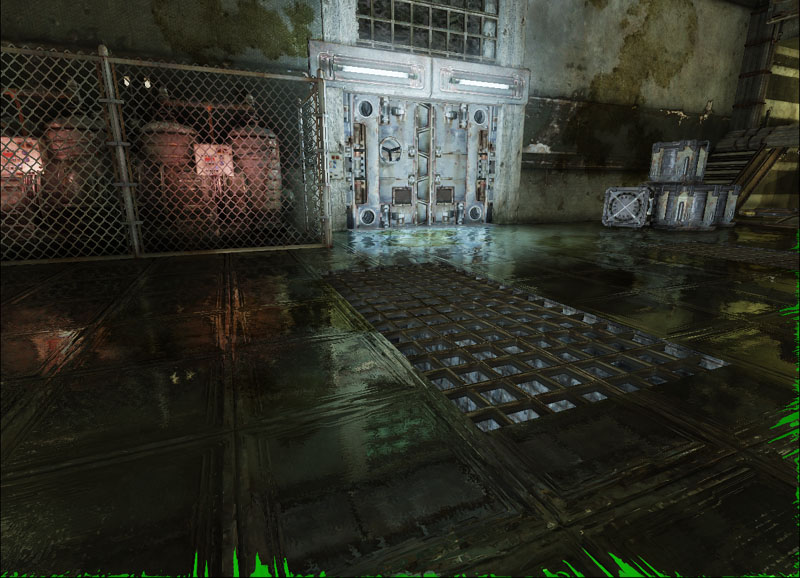
Filtering out the pixels based on color
One method is to look for pixels that match the color you want to filter out (in this case, bright green). After finding those pixels, the undistorted render target is then used. This is done by performing if statements on each component of the distorted render target output. It first looks at the green channel of the distorted render target output. If it is above 0.1f (26 in bytes) then it will filter down to check the red channel, otherwise it will output the distorted render target output. If the red channel is being checked, then it will see if the red channel is below 0.1f. If it is, then it will then check the blue channel, otherwise it will output the distorted render target output. If the blue channel is being checked, then it will see if the blue channel is below 0.1f. If it is, it will then output the render target without the distortion, otherwise it will return the distorted render target. 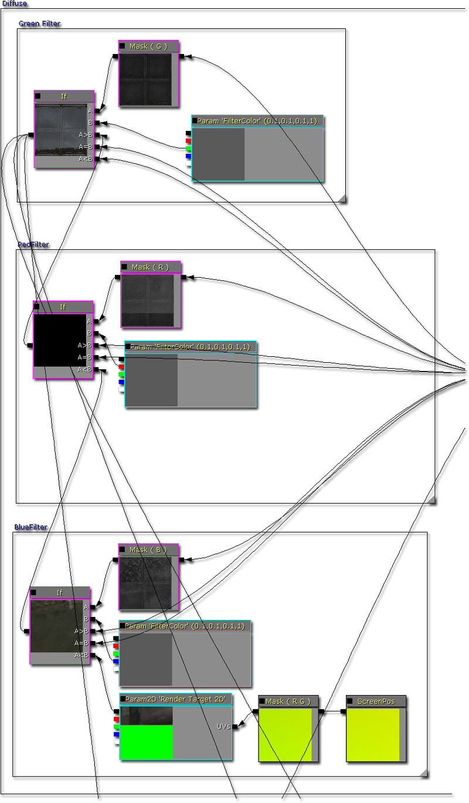 Here is the end result. The results are better than before, but it still misses some of the green pixels due to bilinear filtering. 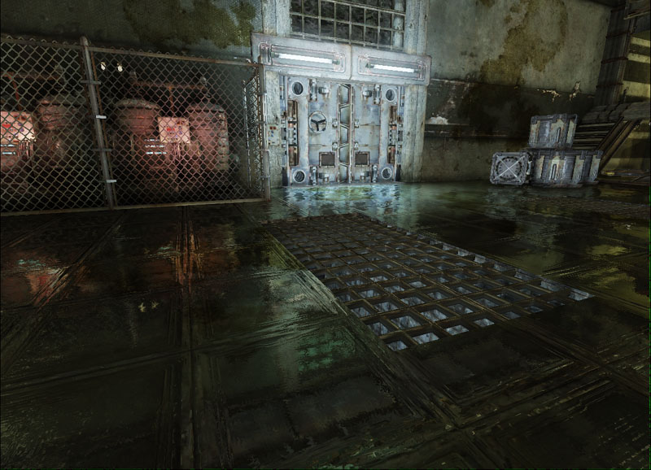 However, if you check which pixels are being selected by this method, you'll see that it is also choosing the green pixels that were part of the reflected scene. Because of this, if your scene is using a predominantly green palette then this method won't work so well. 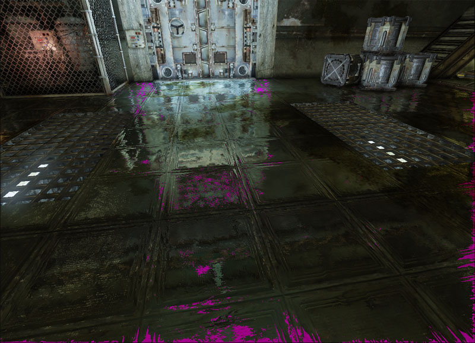Clamping UV coordinates
The other method is to solve the actual problem. Distortion is achieved by adjusting the UV coordinate look up on the render target. When the UV coordinate goes outside the rendered portion of the render target and into the bright green areas, bright green pixels are used; resulting in the problem. Thus, one way to fix this issue is to clamp the distorted UV coordinate lookup. 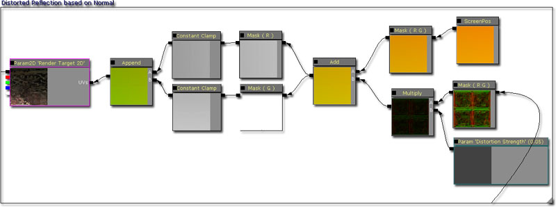 Here is the end result. The results are better than before and the filtering method but some texture banding occurs on the edges of the screen which isn't too noticeable. 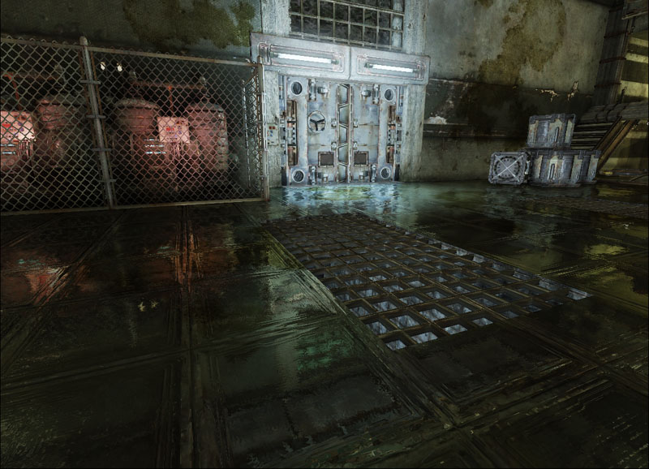 However, this method depends on the fact the render target being used is constant which may not always be the case. Because some pixels are lost due to the UV clamping reflections may not align up in sharp reflections.Downloads
- Download the content used in this gem. (DistortedReflectionContent.zip)

{kind=link}
{kind=link}
{kind=link}